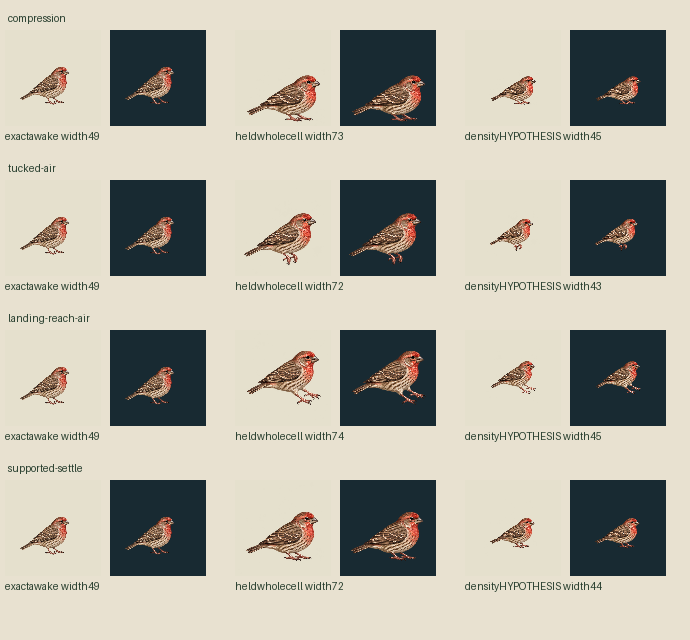
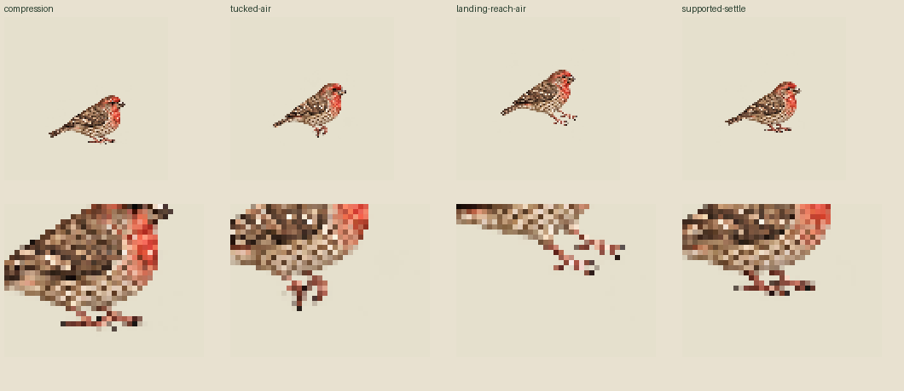
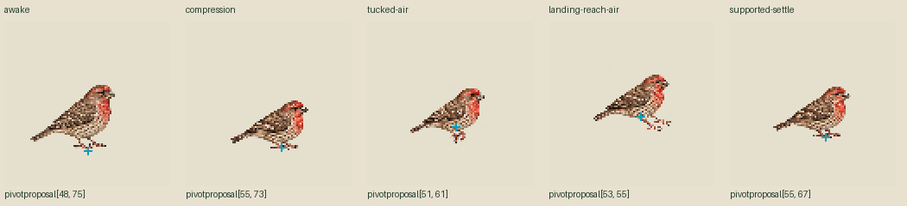

Zero calls / zero new drawings. The four actual627cell PNGs are unchanged: each is copied into a1024transparent canvas with constant198left/top,199right/bottom, then wholecanvas nearest to96. Existing source density1024/96 is used as an explicit HYPOTHESIS for newcellpixels. It is not established by the generator. No bboxfit, perposeimagewarp/translation/paint or footsnap.
All bird canvases96CSS/world pixels, density1. Original widths72–74 versus awake49; hypothesis widths43–45. Compression lowestrow74 matches old74, but settle67 remains7rowsaboveold. These measurements diagnose, not approve anatomy or a hop.
Left pair originalheld; right pair densityhypothesis. Common displaypivot48,75 throughout. Proposed perphase pivots are NOT APPLIED. The diagnostic line atworld100 still misses proposed supporting toe regions. Rootpath is authored, not biological measurement; no accepted contact/clip or seamlessloop claim.



Supported proposedorigins lie on visible toe-boundary pixels; airborne ones are approximate virtualbodyorigins with contacts[]. These bases are unspliced; a later perframepivot renderer would reposition images and needs independent review. No physical/sole/pressure, geometry, currentMac or usefulhop acceptance. Frozen originals46targets+reviews unchanged.
Exact matrices/hashes · Unapplied image-landmark proposals · Separate authored path